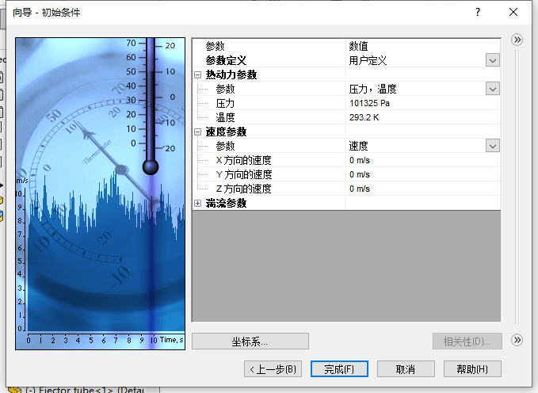

网格划分
创建项目
默认下一步
默认下一步
选择内部分析，默认下一步
双击选择空气做为流动的介质，默认下一步
默认下一步
默认下一步，完成流体项目创建
边界条件
设置入口环境压力为1个大气压
入口
出口
划分网格
基础网格：流体分析在划分默认网格时，回使用基础网格。此时的网格不会区分结果形状，只将计算区域进行等单元的划分。称基础网格

初始网格：通过【运行-网格】只启动网格划分计算
通过设置【结果-切面图】，来查看网格划分情况。
查看网格截面的【切面图】，可以看到，在一些特殊结构位置模型网格回进行默认细化的处理。（这里是按自动的方式生成）
我们还可以控制全局网格精度，进行调整

局部网格
使用局部初始网格
单单只对小面进行加密是效果不明显的，
因为周边网格粗糙，过渡到局部细化网格时，大小差距不能大于2。因此，我们需考虑先将一部分计算域网格细化，在其中再进行局部细化
组件控制
添加区域的实体，来局部控制该区域的网格细化
插入该实体的【局部网格设置】
控制平面
然后我们检查入口处的网格情况，发现现在是已经细化，但是网格划分不算对称。
对于回转体等对象结构，对称的网格回有利于仿真结果的准确。因此，我们需要考虑将网格添加【控制平面】使得，网格从控制平面中心对称划分。
从【全局网格-手动-控制平面】进入其便捷界面，然后找到Z方向面，输入“0.2143425”m（这个数值是刚好过入口圆柱的中心距离值，实际情况会需要我们提前做好测量得到）。
求解网格
现在需要细化的位置就是对称的了，
你还可以在【结果-切面图】查看其他方向的网格是否对称，按需要重复其他坐标的操作。
计算结果
查看切面图
查看迹线
补充
网格类型
根据计算域自动生成的立方体网格，形状是平行和正交于全局坐标系轴线的基准面
手动细化
细小特征细化
细小固体特征细化等级=1（左）
已经探测到水平狭长圆柱体，但由于等级较低无法捕捉这一圆柱体。
细小固体特征细化等级=4（右）
水平圆柱体已经被细化。注意，网格仅仅细化了国柱体所在的区域。
曲面细化
曲线细化等级=0，不细化网格。
曲面细化等级=1，使用部分网格进行细化
公差细化
公差细化定义网格多边形接近表面的程度制。细化的固体尺寸进行更多的控细化等级设置一个网格细化为多少倍，以满足要求。
标准控制网格多边形的精度-表面拟合如果右图中的”h”值大于公差标准，网格会进行细化。
狭长通道细化
狭长通道网格细化：(Narrow通过使用channels)页你可以在模型的流动通道内定义额外的网格，以便获得更为精确的结果，
默认情况下在狭长通道内的网格细化总会进行。